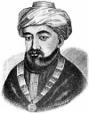

Yahudi tarihinin en önemli figürlerinden olan Moses Maimonides (1135-1204), dindar bir bilgin ve filozoftu. Orta çağ İspanyası’nda doğmuştu. Yahudi kanunlarındaki karışıklıklara açıklık getirmeye ve felsefe ile gelenekleri uzlaştırmaya çalışmıştır. Yaşadığı dönemde dünyanın en önemli doktorları arasında sayılıyordu. Kralların ve sultanların sağlığı ona emanet edilmişti.
Müslümanların kontrolündeki Kordoba’da büyüyen Maimonides, Yahudi toplumunun bir üyesi olarak yetişti. Yahudi, İslam ve Yunan felsefelerini inceledi. Ne var ki 1148 yılında İspanya’da dini toleransın altın çağı son buldu. Bir ferman yayınlanmış ve şehrin Yahudileri Müslüman olmaya zorlanmıştı. Aksi taktirde ya İspanya’yı terk edecek ya da idamı göze alacaklardı. Maimonides’in ailesi sürgünü seçip Fas’a gitti.
Maimonides, 1166 yılında Mısır’ın Kahire şehrindeki Yahudilerin lideri oldu. Kahire’de Mishned Torah isimli çalışmasını yayınladı. Bu kitapla birlikte büyük bir Yahudi düşünürü olarak isim yapacaktı. On dört ciltten oluşan kitap genel olarak Yahudi dininin temel soruları üzerine yoğunlaşmaktadır. 1190 yılında yayınladığı Aklı Karışanlar İçin Rehber isimli çalışması ise çağın temel felsefi tartışmalarıyla ilgilidir.

1175 yılında mücevher satıcısı ağabeyi bir gemi kazasında hayatını kaybetti. Bu olay Maimonides’i derin bir üzüntüye sevk etti. Kısa bir süre sonra bu olayın etkisiyle tıp çalışmaya başladı. Kısa bir süre sonra Mısır’ın önde gelen tıp otoritelerinden biri haline gelecekti. Astım, hemoroidler, zehirler ve çeşitli hastalıklarla ilgili eserler hazırladı.
Tıpkı Kordobalı çağdaşı Müslüman filozof İbn-i Rüşd (1126-1198) gibi o da Aristo (MÖ 384-322) felsefesini dinle ilişkilendirmeye çalıştı. Maimonides, Aristo’nun kimi düşüncelerini reddetse de onun bilimsel yaklaşımını benimsedi ve dinin akılla uyum içerisinde olabileceğin iddia etti.
Maimonides altmış dokuz yaşında Mısır’da öldü. Yahudi hukukunun en önemli yorumcuları arasında kabul edilmektedir. Düşüncelerinin, Katolik düşünür Aquinalı Thomas (1225-1274) da dahil olmak üzere Hıristiyan dünyasında önemli bir etkisi olmuştur.
Ek Bilgiler
1- Maimonides, hahamın isminin Yunancasıdır. Aynı zamanda İbranice “Moshe ben Maimon” ve “Rambam” (İbranice’deki isminin ilk harflerinden türetilmiş bir lakap) isimleriyle de tanınmaktadır.
2- Mısır’a geldikten sonra Kahire’nin Fustat adlı bir mahallesine yerleşti. Sadece birkaç yıl sonra, 1168 yılında, bu bölge Hıristiyan işgalcilerin eline geçmemesi için tamamen yakılmıştır.
3- Maimonides, batıda Selahaddin adıyla bilinen Mısır sultanı Yusuf İbn-i Ayyub’un (1138-1193) saray doktoruydu. Sultan ünlü bir masalda Maimonides’i, düşmanı İngiliz Kralı Aslan Yürekli Richard’ı (1157-1199) tedavi etmesi için gönderir. Söylendiğine göre Richard, Haçlı seferleri sırasında Selahaddin’e karşı savaşırken ateşli bir hastalığa yakalanmıştır. Bu hikaye genelde Sultan’ın şövalyeci ruhunu temsilen anlatılır.